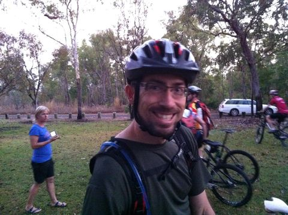

Videos from quad, hexcopters and helmets
2011
I have posted videos filmed from the YF680 hexcopter and TBS Discovery Pro using a GoPro. Enjoy...
SeanMac.Net - videos and photos served locally:
YouTube - Choose HD option from Settings Menu - Select 720p or 1080p:
LARS N BARS GOES KLUNKING
Thursday, October 23rd, 2011
Howard Springs New Pine Forest
Sunday, October 30th, 2011
Jurgen, Quentin and myself trecked out to the new section of track. We did three laps to help Q train for the Margret River WA - Anaconda Adventure Race.
We started out collecting Jurgen from his place expecting a quick getaway, but Jurgen had other ideas and decided to change his tyres to slicks which would be useless in the forest. After this diversion we finally make it out of town and on our bikes by 5pm. The Contour was great for giving a good idea of what the ride was like. Will think about some better camera positioning and shots over the next couple of weeks.
Q and Jurgen adjusting brakes Q threatening something with a tiedown strap{kind=link}
Lee Point Ride - Testing Camera
Saturday, October 29th, 2011
Got a new Countour HD camera and gave it a try out.
{kind=link}
Turret Track
Gully
The Wet Season is here
Monday, October 24th, 2011
First Rain of the Wet Season during the day, up until this point we have only had showers in the middle of the night.
From the backyard: drain staring to fill up. Everything get wet no matter how big your balcony is. Drain running at normal capacity.Spokes NT Howard Springs Pine Forest Ride
Saturday, October 22th, 2011
The ride got a huge attendance with 27 riders turning up after Mag's from Spokes NT mentioned the magic words "New Track". Quentin and Richard turned up, but alas Mark was stuck on watching the Lanco international SuperSeries Hockey 9's on ABC and not sure what happened to Jurgen.
The new track is opposite from the normal Howard Springs Pine Forest Ride. After marshalling at the start of the old track we headed down and across the road, along a track and into the new track. The DORC and Spokes guys have done a huge job cutting and planning this track, adding jumps and some tricky sections. The most noticable difference between the old and new tracks are the long fast sections that follow the treeline rather than weaving and turning all the time. The more riders that go on the track, the better it will get.
Richard ready to go. Everyone marshalls at the start. Richard and Quentin.{kind=link}
Lee Point Ride - with added drama!
Friday, October 21th, 2011
Went for a ride with NAthan and Quentin as a trainning ride for Q's upcomming Margret River WA - Anaconda Adventure Race. I found a dead tree broken off and across the gully track and thought it would be a great idea to remove it as it would take you off at the neck if you went headlong down the trakc without paying attention.
I snapped off the tree and heard a crack that wasn't good, so turned my head away and was greeted with a springy core of the trunk that the whiteants hadn't gotten to. I was wearing my helmet but got hit in the side of the head and the blood started to flow. I found a large splinter lodged deep into my skin just in front of my ear, so removed it which added more blood...
Anyway... We kept on riding along the Blair Witch track then back to CDU. The little adventures you have when on the trail!
Malcolm and Jurgen's Birthday
Friday, October 21st, 2011
Mal and Jurgen kept thier birthday secret, until someone spilled the beans (Quentin). Cakes and candles were supplied by Q and myself in short order to much appreciation.

Spokes NT Lee Point Ride
Saturday, August 13st, 2011
A good number of riders turned up to this ride and split up into three groups: Ladies, Slower riders and Crazies
My bike Quentin with two flat tubes - as this was before the ride started!{kind=link}
Holmes Jungle ride
Sunday, October 9th, 2011
Got a phone call from Jurgen at 3:30pm saying that he was going for a ride. I thought about it and said I meet up at work in half an hour. From there we were joined by Nathan and headed off on a residential street tour to get to Holmes Jungle.
We left it to Jurgen to lead the way through his latest favorite place to ride, down through dark jungle streaches and across countless metal walk ways and bridges. It proves to be a challenging course with the constant threat of mosquitos if you stop to long.
Floodplain with plenty of birdlife Nathan snaps a photo Jurgen and Nathan{kind=link}
{kind=link}
{kind=link}
{kind=link}

{kind=link}
CDNP DORC MTB comp
Friday, July 31st, 2011
I did two laps of the 25KM course around Charles Darwin National Park and Hidden Valley. 46 Riders turned up for the 7am starting time, this was done to catch the coolest part of the day. I planned to do only 1 lap, but changed that to two after having a look at the course. This was not to be as easy as I thought. Q and Gary competed as well and we all were pleased with our performances.
Quentin at the Startline{kind=link}

Gary at the Startline Quentin at the finish of two laps and 50km Max starting lap three Robbie from SpokesNT starting lap threeACS Golf Day
Friday, July 8th, 2011
A few brave ITMS souls went to Gardens Park Golf Club for the annual ACS Ambrose golf day. Most IT related companies from Darwin turned up for a shot at prizes and fun. Beer was supplied by kindly Irish girls in golfcarts, made the game more interesting. Greg, Wayne, Kev, Mark and Alan
Wayne and Kev discuss tactics Mark was the best kitted out Alan takes the putt..Mindal Beach Market Ride
Thursday, July 7th, 2011
Meeting up at Nightcliff foreshore - Quentin, Emma, Keiran and myself set off to Mindal Beach Markets for some food. It was an interesting ride with the Emma almost getting collected by a crazy VW Van driver.

The Secret Life of the Systems Admin
Monday, July 8th, 2011
Security cam pictures can reveal some strange behaviour.
Don't touch!
That wasn't me...
Lee Point Friday Ride
Monday, June 24th, 2011
Friday arvo loop
{kind=link}
Lee Point Friday Ride
Monday, June 17th, 2011
Friday arvo loop
{kind=link}
Rapid Creek Nature Trail Ride
Monday, June 13th, 2011
Penny and I went for a ride along Rapid Creek Nature Trail to enjoy the wonderfully cool weather Darwin is experienceing at the moment.
{kind=link}
GT 29'er
Wednesday, June 8th, 2011
Quentin and I test rode a GT 29" Mountain Bike at Lee Point on the eve of the Katherine Ultra Challenge. It is amazing how much difference there is riding a 26" to a 29" bike. Amazing...
{kind=link}
{kind=link}
Charles Darwin National Park Ride
Saturday, June 4th, 2011
Quentin, Mark and I rode Charles Darwin National Park as fitness trainning on the leadup to Q's Katherine Ultra Challenge. None of us had ridden there for ages and found the trail very rough, but better in some downhill sections than the last time we had been there.
{kind=link}
Rapid Creek Ride
Saturday, May 31st, 2011
Penny and I went for a little ride along the banks of Rapid Creek along the nature trail. This starts just up from the "Furry Grandmother" at the airport and finishes at the airport bridge.
Lee Point ride during a monsoonal downpour
Thursday, January 20th, 2011
The ride started with a storm front out to sea, overcast and the ground saturated from all the record rain Darwin has been experiencing. I assumed that the weather would do the same today as it had the day before... We weren't so fortunate - about half way round the track it came down in bucketloads. Nathan and myself got an interesting ride back!
Go to Top of Page